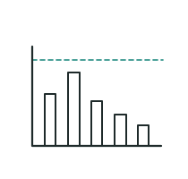
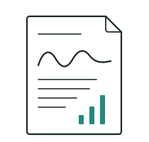
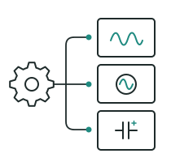

What is YanQ
YanQ. The Study Before the Solution.
A structured engineering study that measures what your power system is actually doing, before any solution is recommended. YanQ finds what standard monitoring misses, benchmarks every parameter against IEEE 519-2022, and delivers a precise diagnosis with a specific recommendation sized to your site's data.
Start With a DiagnosisHow YanQ Works.
Resolving power quality problems requires more than replacing components or resetting breakers. It requires knowing exactly what the system is carrying. The harmonic signatures, the reactive power imbalances, the load behaviors and why they are happening in the first place.
-
Step 1 Calibration & SLD
Measurement
On-site power quality data collection using a calibrated analyser mapped to the facility's Single Line Diagram.
Live Acquisition Sampling: 10 kHz -
Step 2 Data Filtering
Compilation
Raw data filtered and structured, removing noise and isolating the parameters that matter.
THDi THDv Power Factor -
Step 3 IEEE 519-2022 Benchmarking
Report Generation
Relevant data collated into a structured Yansa Power Quality Report benchmarked against IEEE 519-2022.
Standard Report Format Actionable Findings -
Step 4 Solution Sizing
Recommendations
Diagnosis translated into a specific, actionable solution, sized to what the site's data actually shows.
AHF SVG Hybrid Systems Passive Correction
What YanQ Delivers.
Diagnosis
Root cause identified and documented, not assumed.

Benchmarking+
Every parameter measured against IEEE 519-2022 standards.

Business Translation
What the data means for your costs, uptime, and equipment life.

Recommendation
A specific intervention sized to what your site's data actually shows.